6 月 24 日：P-JEPA 等视觉表征论文归档
本页按日期归档近期论文，保留优先级、主题、来源与方法线索，方便回看同一批工作的研究脉络。
先读 P-JEPA。把 JEPA 式预测目标改造成长时程 procedural video 表征学习，是今天最贴近通用视频 SSL 的主线。 其余论文按 P1/P2 与主题顺序扫读，重点看方法图、消融设置和是否能迁移到通用视觉表征。
论文索引
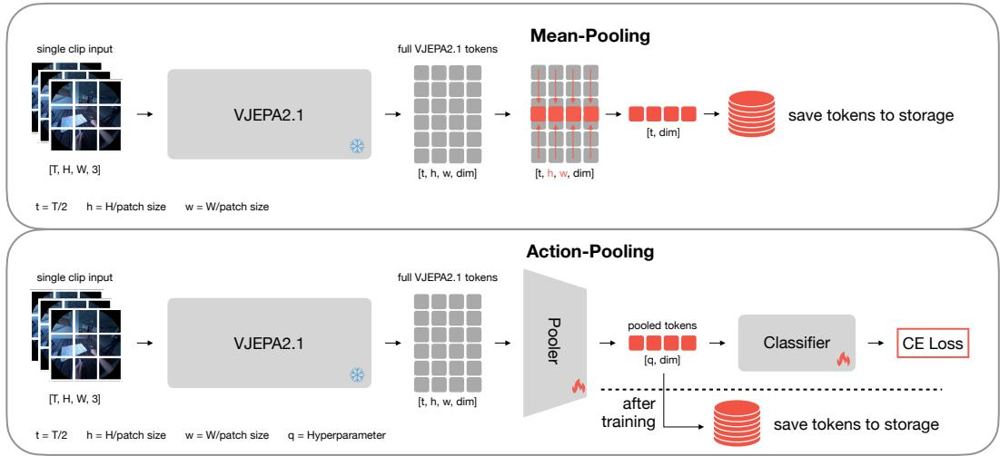
P-JEPA: Procedural Video Representation Learning via Joint Embedding Predictive Architecture
高相关；详见方法、贡献和实验边界。
方法：把 JEPA 式预测目标改造成长时程 procedural video 表征学习，是今天最贴近通用视频 SSL 的主线
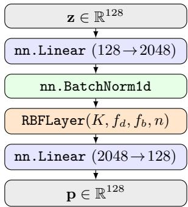
Radial Basis Function Networks as Projection Heads in Self-Supervised Learning
高相关；详见方法、贡献和实验边界。
方法：直接改 SimCLR/BYOL/MoCo/SwAV/SimSiam 的 projection head，并用 RBF 参数估计表征质量
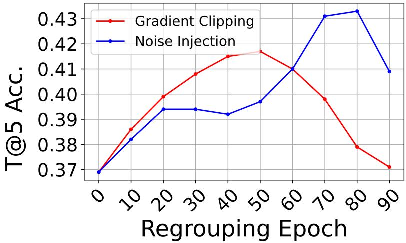
MultiMem: Measuring and Mitigating Memorization in Multi-Modal Contrastive Learning
高相关；详见方法、贡献和实验边界。
方法：给跨模态对比学习定义 memorization 度量，指出文本语义错配是主要记忆化来源
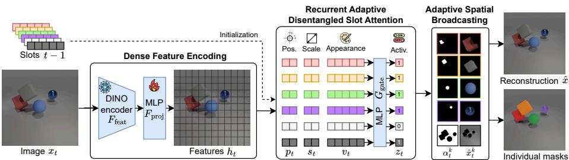
Rethinking Object-Centric Representations for Video Dynamics Modeling
高相关；详见方法、贡献和实验边界。
方法：解释 slot temporal consistency 为什么会锁背景，并用 appearance/pose 解耦修复视频对象表征
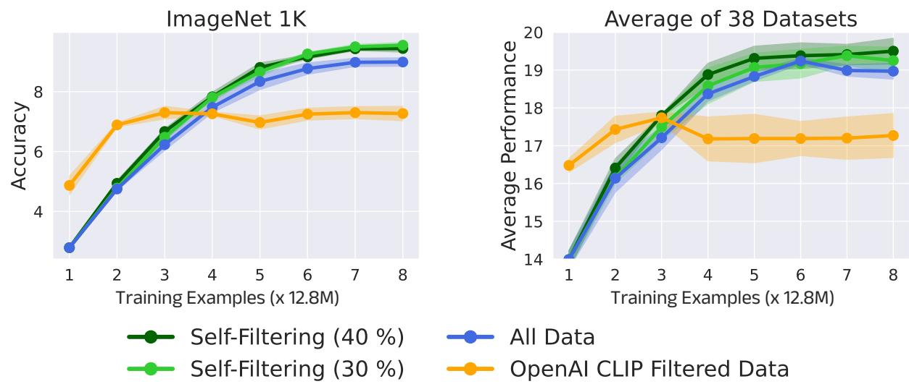
Data Selection Through Iterative Self-Filtering for Vision-Language Settings
高相关；详见方法、贡献和实验边界。
方法：让 CLIP 在训练过程中自举选择 clean + diverse 数据，是视觉语言预训练数据闭环的实用方向
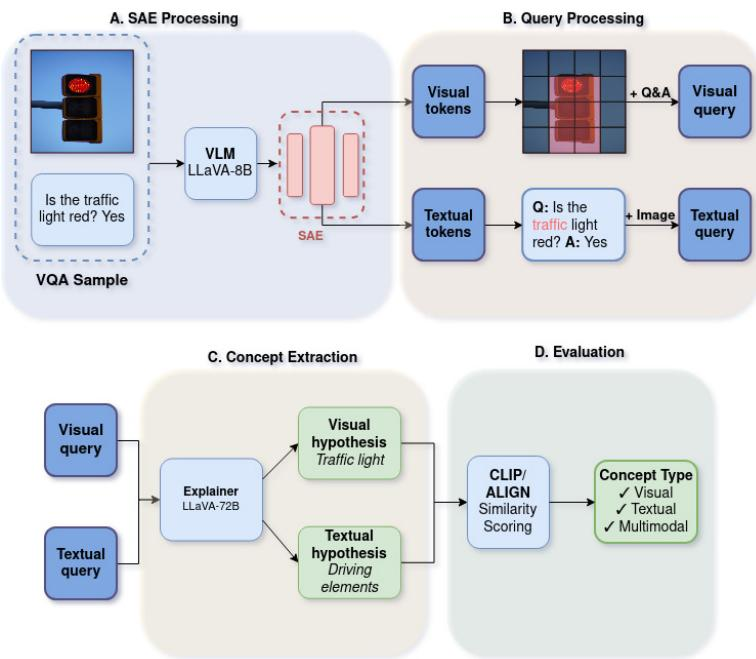
Extraction and Analysis of Multimodal Concepts in Vision Language Models through Sparse Autoencoders
中高相关；详见方法、贡献和实验边界。
方法：把 SAE 从文本或纯视觉概念扩展到 multimodal concepts，有助于理解 VLM 表征结构
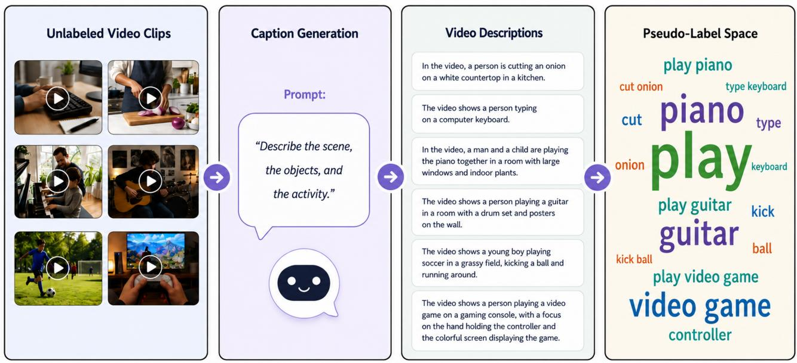
LEViL: Label-Efficient Video Learning via Zero-Shot Distillation over VLM-Generated Pseudo-Label Spaces
中高相关；详见方法、贡献和实验边界。
方法：用 VLM 生成语义 pseudo-label space 训练视频 encoder，是低标注视频预训练的可迁移思路
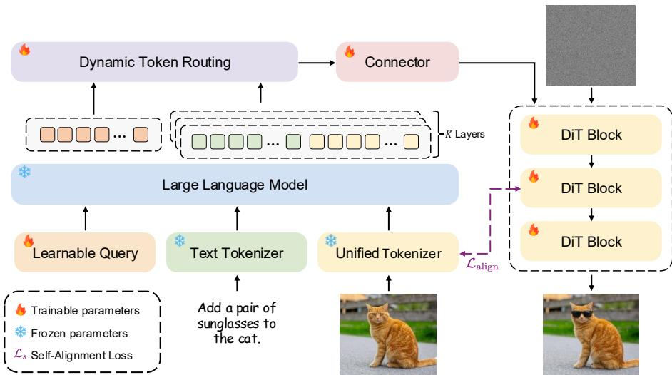
SPAR: Semantic-Pixel Self-Alignment and Adaptive Routing for Unified Multimodal Models
中高相关；详见方法、贡献和实验边界。
方法：试图把语义理解特征和像素重建特征放到统一 tokenizer/路由框架，和 RAE/VAE-for-DiT 线索相关
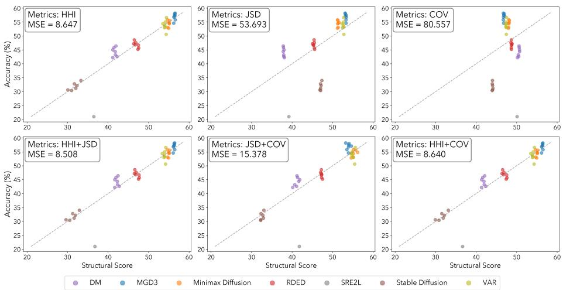
Structural Assessment for Understanding and Guiding Dataset Distillation in Discrete Token Space
中高相关；详见方法、贡献和实验边界。
方法：用离散视觉 tokenizer 分析蒸馏数据的 compositional structure，可作为表征/数据质量诊断工具
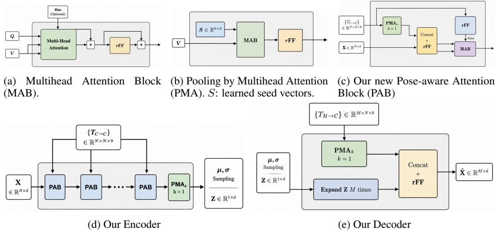
Lightweight 3D Feature Pretraining by Bayesian Inversion of 2D Foundation Models
中相关；详见方法、贡献和实验边界。
方法：把 2D foundation embeddings 反演成 3D semantic latent，方法对 self-supervised embeddings 兼容
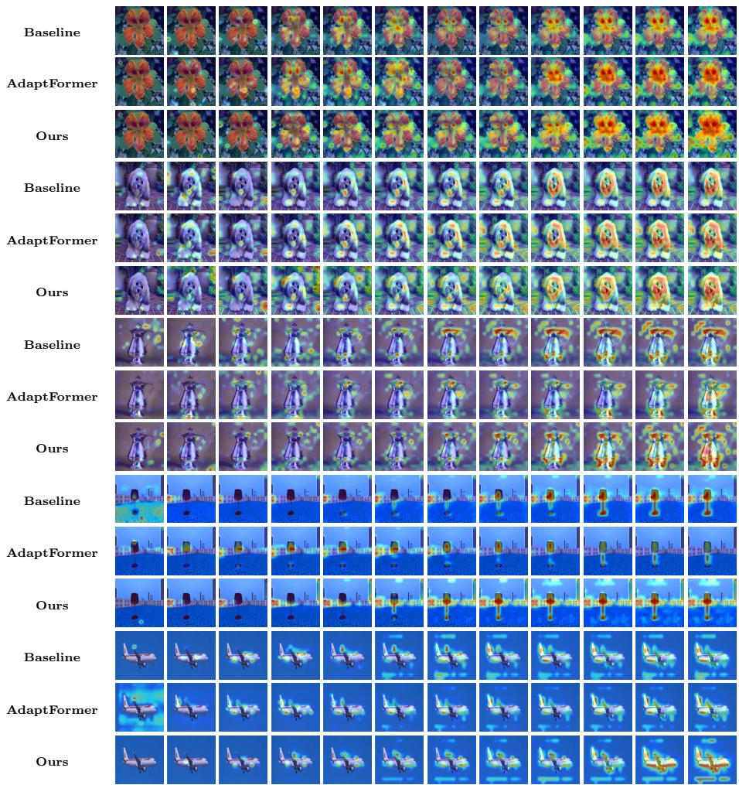
Structured Hyperedge Adaptation for Parameter-Efficient Fine-Tuning of Vision Transformers
中相关；详见方法、贡献和实验边界。
方法：不是自监督训练目标，但关注 ViT token 关系和高效适配，对 VFM 下游迁移有参考价值
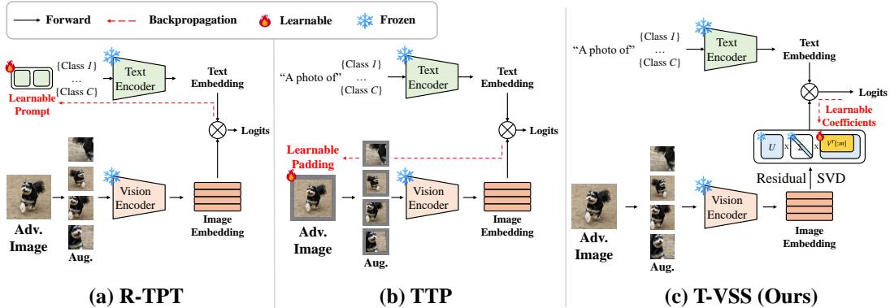
T-VSS: Test-Time Visual Subspace Steering for Adversarial Robustness of Vision-Language Models
中相关；详见方法、贡献和实验边界。
方法：直接在视觉 feature space 做 test-time correction，提醒 VLM 鲁棒性不应只调 prompt
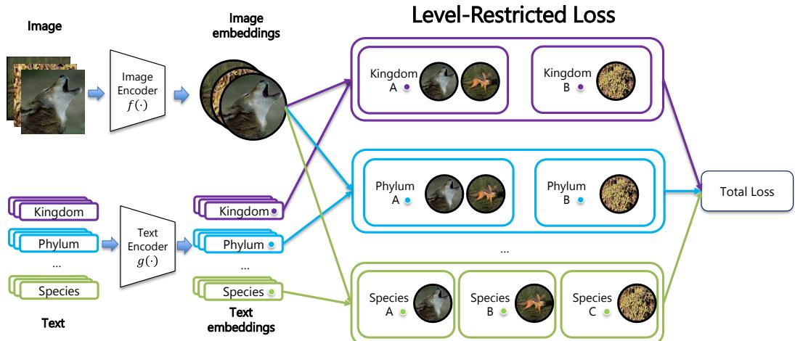
Beyond Flat Labels: Level-Restricted Contrastive Learning for Hierarchical Fine-Grained Vision Classification
中相关；详见方法、贡献和实验边界。
方法：TreeOfLife/BioCLIP 应用较垂直，但 level-restricted contrastive comparison 是处理 false negatives 的可迁移想法